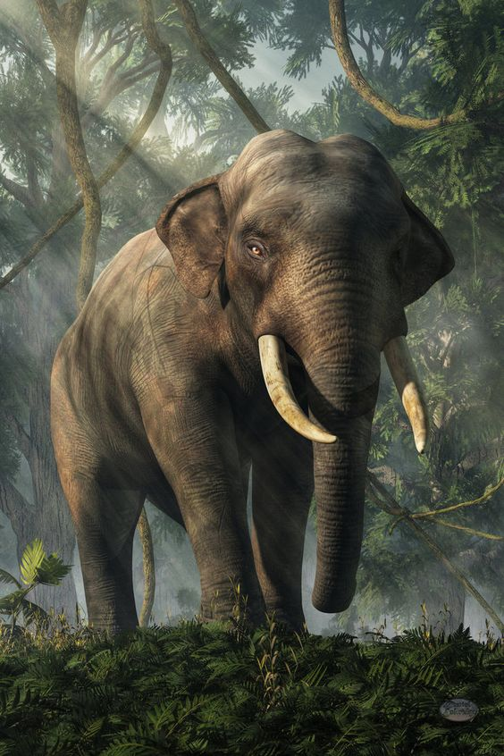
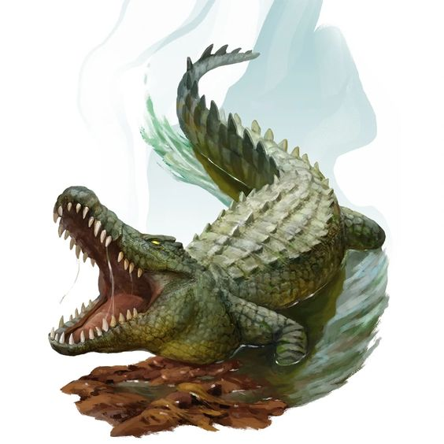
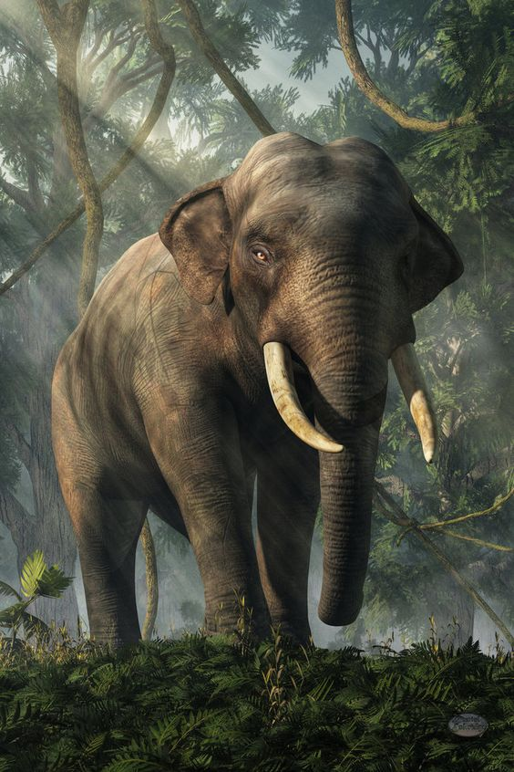
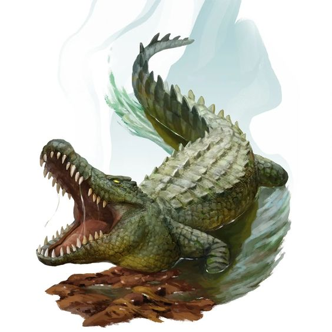

ELANG
GAJAH
HARIMAU
BUAYA
ELANG
GAJAH
HARIMAU
BUAYA
HARIMAU
Populasi harimau sumatera yang hanya sekitar 400 ekor saat ini tersisa di dalam blok-blok hutan dataran rendah, lahan gambut, dan hutan hujan pegunungan. Sebagian besar kawasan tersebut telah mengalami pembukaan hutan untuk lahan pertanian ataupun perkebunan sehingga habitat kucing besar ini semakin berkurang.
Nama:Andre Zuhair Lubis
Nim:10123707
Kelas:IF-11